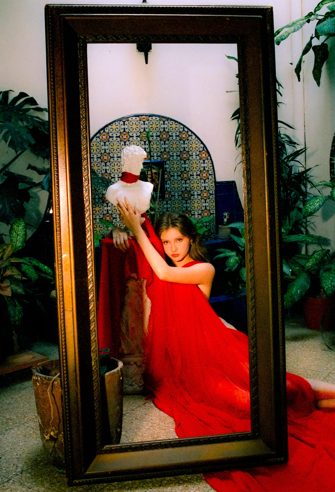

··
After Dark · 18 +
After Dark
Le corps comme paysage, et un registre plus sombre. Ce que la nuit autorise.

Nude
Le corps comme paysage.
Voir la série →
Dark Desire
Le désir mis en scène.
Voir la série →
Boudoir
Une histoire en couleur, en rouge.
Voir la série →